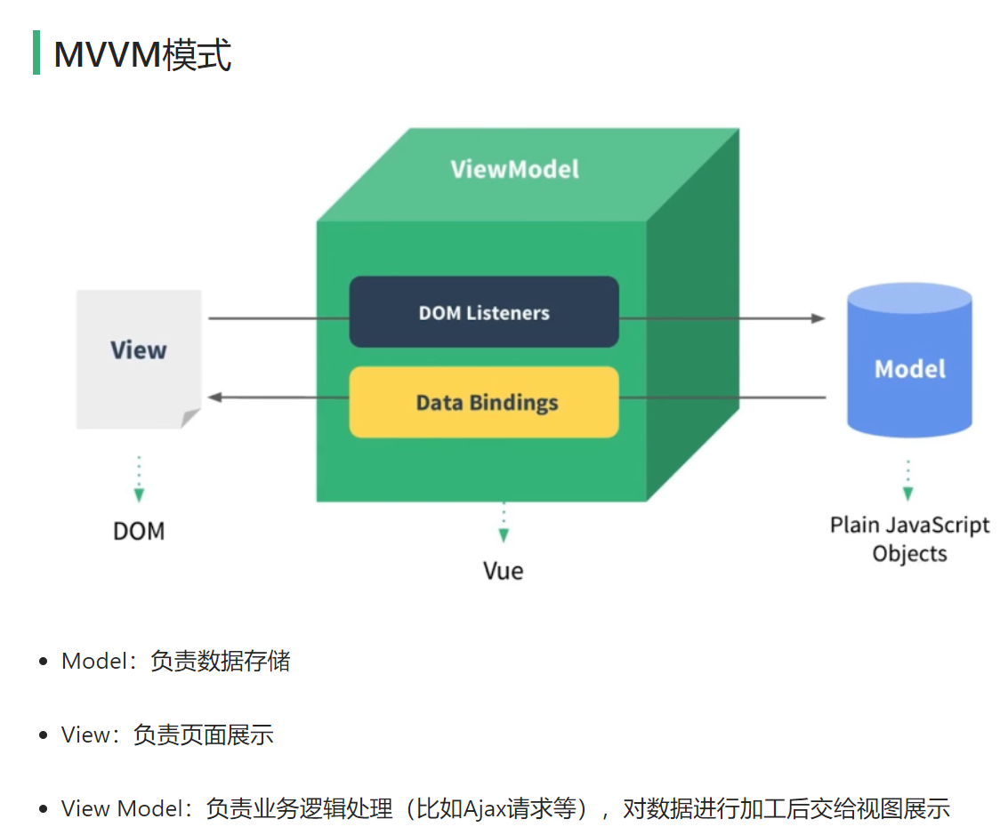
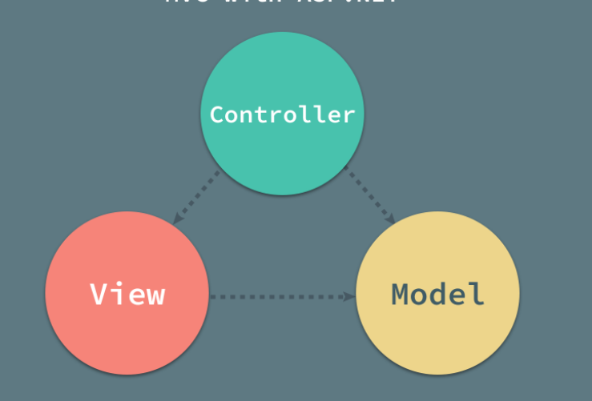

前端踩坑汇总
前言：
web课设遇到了一些阻力，以前常常听人说“大前端”，我常常嗤之以鼻，从前我觉得现在的技术栈，前端也好，后端也罢，乃至移动开发、嵌入式、人工智能等等等等，没有一个领域不配称之为“大”，然而现在才觉得，前端确实很大。从html到css、js等等等等，乃至后来的一些elementUI再到Vue，这仅仅是我接触到的冰山一角。有很多规范与等着我去了解、学习、使用，有很多库可以被调用但我对他们一无所知，有很多标签、属性等着我去了解、熟悉，凡此种种，令人头疼。
另一方面，从前的开发经验带给了我束缚。对于移动开发者来说，标签的嵌套规则已经熟悉的不能再熟悉，所需要熟悉的不过是标签名与属性。但一方面，传统的MVC架构思路带给了我太大的束缚，让我一时很难接受MVVM这种从未见过的架构模式。
MVC与MVVM：


但还是逐渐熟悉了MVVM，感谢这篇博客给我的启发：浅谈 MVC、MVP 和 MVVM 架构模式
不过，另一方面，移动开发与web一个特别大的差异就在于，web没有任何的布局规范，而移动开发几乎全部的UI绘制都遵循特定的规范。这就导致很长一段时间以来我的```标签内一直混乱不堪。web给了开发这对于UI的更高自由度，这是受产品需求影响的，移动开发对界面几乎没有任何缩放需求，而一个web界面就要适应人们对窗口的缩放与界面上更多、更复杂的元素的位置的控制。
computed和methods的区别
<script>中，compute与method都代表着方法的集合。不过，区别还是不小：
computed
computed属性是Vue的计算属性，是数据层到视图层的数据转化反映;
计算属性是基于他们的依赖进行缓存的，只有在相关依赖发生改变时，他们才会重新求值，也就是说，只要他的依赖没有发生变化，那么每次访问的时候计算属性都会立即返回之前的计算结果，不再执行函数；
区别
1.computed是响应式的，methods并非响应式。
2.computed是带缓存的，只有依赖数据发生改变，才会重新进行计算，而methods里的函数在每次调用时都要执行。
3.computed中的成员可以只定义一个函数作为只读属性，也可以定义get/set变成可读属性，这点是methods的成员做不到的。
4.computed不支持异步，当computed内有异步操作时无效，无法监听数据的变化
5.computed是属性访问，而methods是函数调用
6.在
HTML的插值里
- computed定义的方法我们是以属性的形式访问的，和
data里的属性访问形式一样，{{computedTest}}- 但是methods定义的方法，我们必须要加上
()来调用，如{{methodTest()}}
注意
如果声明的计算属性计算量非常大的时候，而且访问量次数非常多，改变的时机却很小，那就需要用到computed；缓存会让我们减少很多计算量。
作者：hualayou，有删改
链接：https://www.jianshu.com/p/d69a875b769e
跨域
一、什么是跨域HTTP请求
现代浏览器出于安全的考虑，使用 XMLHttpRequest对象发起 HTTP请求时必须遵守同源策略，否则就是跨域的HTTP请求，默认情况下是被禁止的。跨域HTTP请求是指A域上资源请求了B域上的资源，举例而言，部署在A机器上Nginx上的js代码通过ajax请求了部署在B机器Tomcat上的RESTful接口。
IP（域名）不同、或者端口不同，都会造成跨域问题。为了解决跨域的问题，曾经出现过jsonp、代理文件等方案，应用场景受限，维护成本高，直到HTML5带来了CORS协议。
CORS是一个W3C标准，全称是”跨域资源共享”（Cross-origin resource sharing），允许浏览器向跨源服务器，发出XMLHttpRequest请求，从而克服了AJAX只能同源使用的限制。它通过服务器增加一个特殊Header[Access-Control-Allow-Origin]来告诉客户端跨域的限制，如果浏览器支持CORS、并且判断Origin通过的话，就会允许XMLHttpRequest发起跨域请求。
二、CROS常见header
Access-Control-Allow-Origin: http://****.com表示允许http://****.com发起跨域请求。
Access-Control-Max-Age:86400 表示在86400秒内不需要再发送预校验请求。
Access-Control-Allow-Methods: GET,POST,PUT,DELETE 表示允许跨域请求的方法。
Access-Control-Allow-Headers: content-type 表示允许跨域请求包含content-type
三、CORS实现跨域访问
授权方式
方式1：返回新的CorsFilter
方式2：重写WebMvcConfigurer
方式3：使用注解（@CrossOrigin）
方式4：手工设置响应头（HttpServletResponse ）
注：方式1和方式2属于全局CORS配置，方式3和方式4属于局部CORS配置。如果使用了局部跨域是会覆盖全局跨域的规则，所以可以通过
@CrossOrigin注解来进行细粒度更高的跨域资源控制。
1.返回新的CorsFilter(全局跨域)
1 |
|
2. 重写WebMvcConfigurer（全局跨域）
任意配置类，返回一个新的WebMvcConfigurer Bean，并重写其提供的跨域请求处理的接口，目的是添加映射路径和具体的CORS配置信息。
1 |
|
3. 使用注解（局部跨域）
在方法上（@RequestMapping）使用注解 @CrossOrigin ：
1 |
|
或者在控制器（@Controller）上使用注解 @CrossOrigin ：
1 |
|
4.手工设置响应头（局部跨域 ）
使用HttpServletResponse对象添加响应头（Access-Control-Allow-Origin）来授权原始域，这里Origin的值也可以设置为"*" ，表示全部放行。
1 | ("/hello") |
判断合法
数字
小问题，普适的方法：正则
1 | var re = /^[0-9]+.?[0-9]*/; |
邮箱
1 | var pat = '[a-zA-Z0-9]+@[a-zA-Z0-9]+\.[a-zA-Z0-9]+' |
插槽slot
我为什么不用外键
在关系型数据库中，外键也被称为关系键，它是关系型数据库中提供关系表之间连接的多个列，这一组数据列是当前关系表中的外键，也必须是另一个关系表中的候选键（Candidate Key），我们可以通过候选键在当前表中找到唯一的元素。在通常情况下，我们都会使用关系表中的主键作为其他表中的外键，这样才可以满足关系型数据库对外键的约束。

外键不仅仅是数据库表中的一个整数，它还提供了额外的一致性保证。因为数据库往往是整个系统的真理之源（Source of Truth），所以保证数据的一致性和正确性非常重要，关系型数据库虽然提供了外键、触发器等特性保证一致性，而且虽然此次实验里面也提到了外键，但是在今天的生产环境中却很少被使用，并且我也不准备使用。
引用完整性（Referential Integrity）是数据的属性，如果数据拥有该属性，那么数据中所有的引用都是合法的，在关系型数据库的上下文中，这就意味着关系型数据库中引用另一个表中的值必须存在。
1 | ALTER TABLE posts |
上述 SQL 语句可以向关系表中增加外键约束，该 SQL 语句的执行前提是 posts 表中存在 author_id 字段。从 SQL 语句中的 CONSTRAINT 关键字我们也能推测出外键不是一种数据类型，它是不同关系表之间的约束。
不使用外键的原因其实很简单，MySQL、PostgreSQL 等关系型数据库很难水平扩容，但是无状态的服务往往都可以很容易地扩容。由于外键等特性需要数据库执行额外的工作，而这些操作会占用数据库的计算资源，所以我们可以将大部分的需求都迁移到无状态的服务中完成以降低数据库的工作负载。
根据更新和删除时的行为不同，我们可以将外键分成 RESTRICT、CASCADE 和 SET NULL 等几种，当我们为关系表中的字段增加外键约束时，需要指定外键的类型，最常见的也就是 RESTRICT 和 CASCADE 两种，其中 RESTRICT 为外键的默认类型，不同类型的外键会带来不同的额外开销，而这些额外开销就是我们不使用外键的理由：
- 使用
RESTRICT会在更新或者删除记录时对外键对应的记录是否存在进行一致性检查； - 使用
CASCADE会在更新或者删除记录时触发级联更新或者删除操作；
注意：MySQL 中的
NO ACTION和RESTRICT具有相同的语义
而在这个回答中，作者对是否使用外键给了一些理由：
In MySQL, a foreign key requires an index. If an index already exists, the foreign key will use that index (even using the prefix of an existing multi-column index). If no index exists, defining the foreign key will build the index.
So the size increase and time to create a foreign key is about the same as to create an index on the same column(s).
The performance of a SELECT is not impacted significantly by the presence of a foreign key. Only a slight additional work for the optimizer, to consider the new indexes.
The performance of updating is more, because for each foreign key, an INSERT/UPDATE/DELETE has to check to see if the constraint is satisfied. That means a primary key lookup to the referenced tables. This impact is measurable, and it is greater if the referenced tables are not in the buffer pool.
Another impact is the locking. If I update a row in a child row that has a foreign key, InnoDB places a shared-lock on the referenced rows in the parent tables. That means no one can update those parent rows until I commit. If you have lots of threads updating child rows, then the parent rows may be locked most of the time, and this can make it hard to do concurrent work in the parent tables. Not so much a performance problem, but a concurrency problem.
As with all “how does that perform” questions, the answer really depends on your workload. If you don’t have concurrent updates, for example, that issue may not effect you for all practical purposes. Testing it yourself with load testing is the only way to be sure. It’s not something anyone on StackOverflow can answer precisely for you.
总结一下，一方面就是select受性能外键影响不大，但是INSERT/UPDATE/DELETE的性能会受到较大影响，因为检查参数是否满足条件需要额外的性能支出，如果数据表不在缓冲池会导致更高的性能亏损。另一方面就是外键的加锁策略导致在并发量较高的情况下程序等待锁被释放而引发的性能亏损，与单表索引不同的是，它会引用一张或多张父表，这样当对子表进行写入操作(UPDATE/INSERT)的时候，父表就会被加上“共享锁”，这样在对子表高并发进行写入操作的情况下，对父表的写入操作就会由于“共享锁”的存在，而会长时间不能得到更新。
（个人觉得不能及时更新会对事务一致性产生一定影响）（这句话不一定对）
其次，外键并不是不可替代的，只要后端逻辑处理得当完全可以避免外键的使用，而且在逻辑上也是很简单的，所以我更倾向于使用这种方法。
部分参考：https://draveness.me/whys-the-design-database-foreign-key/，ta讲的真好